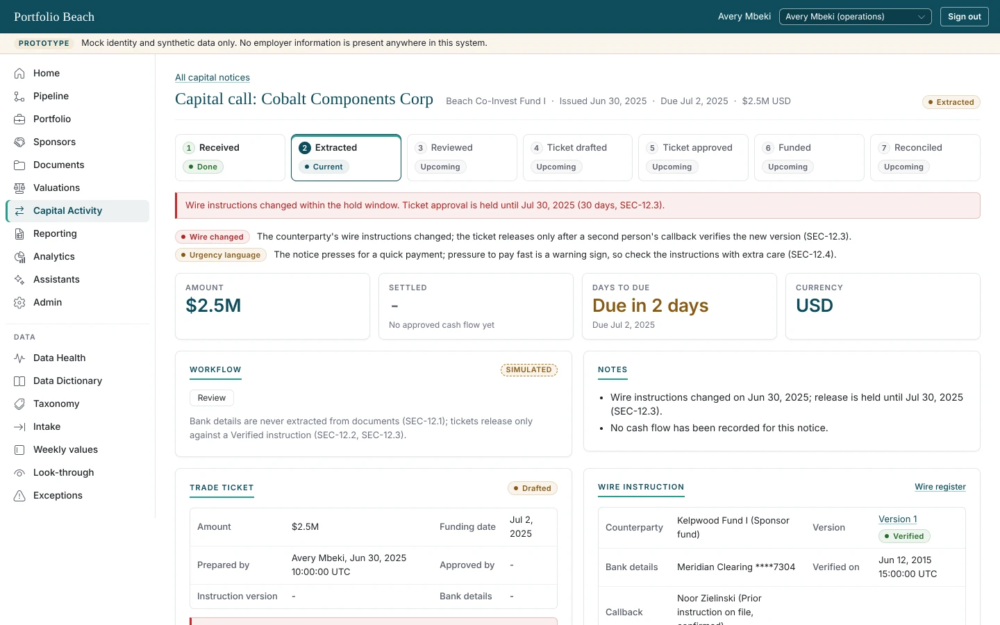
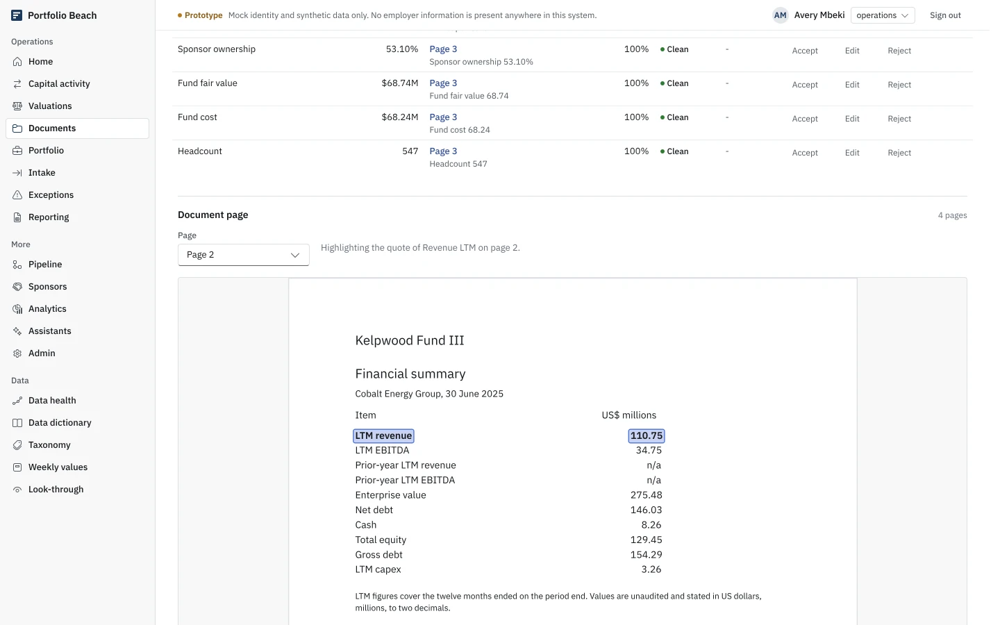

The rules that are built and covered by tests in the repository, in plain words.
Prototype, synthetic data only
A portfolio system holds sponsor financials, valuations, client positions and payment
instructions. Portfolio Beach is designed so that a number a client could see cannot change
silently, and so that a person sees only what their role and entitlements allow. Access
rules are enforced twice: by the application’s API and again by row-level security in the
database.
Roles and entitlements
Seven roles: viewer, deal team, operations, approver, investor relations, platform admin
and auditor. Client data is visible only to users entitled to that client. Each role
reads what its access matrix allows and nothing else.
Walls around restricted deals
A walled deal is visible only to its named members. For everyone else the record answers
as not found, so its existence is not revealed. When a walled deal closes, the position
it becomes stays behind the same wall.
The preparer never approves
The person who prepares a valuation cannot approve it, and the person who drafts a trade
ticket cannot approve its release. The check compares people, not roles.
Every change is audited
A change to a number a client could see is written to an append-only audit trail: who,
what, when and why. The financial tables keep their full history.
Locked means locked
A valuation moves from Draft to Ops prepared to Deal team approved to Locked. The lock
is a SHA-256 hash over the version, the method, its inputs and the fair value.
A Locked valuation cannot be updated in place: the database refuses it.
A correction reopens it into a new version, with a reason and a task for each prior
approver.
Reports and analytics read Locked valuations only.
A Locked version: its steps, the lock text with its hash, and three approvals by three
people.
Prototype. Synthetic data only: no real firm, fund, company or person appears.1 / 2
Portfolio BeachControls and security

A capital call that arrived with changed wire instructions: the hold on the release and
the alerts for a changed wire and urgent language.
Payment controls
Bank details come only from a versioned wire register. They are never extracted from a
document.
A new or changed instruction is verified only by a second person’s callback to an
independently sourced number.
A changed instruction holds the release of the trade ticket. Inside the hold window
the approval takes a third person, who neither proposed nor verified the change.
Bank details are encrypted, and masked for every role except operations and approvers.
Each clear read is audited.
AI output goes through a person
A tag below the confidence threshold waits in a review queue.
Extracted values are staged with a unit, a page, a short quote and a confidence. They
reach the record only after a reviewer approves.
Draft highlights and commentary carry an AI draft label until accepted.
Each AI feature sits behind a kill switch that a platform admin can turn off.
In the prototype the classifier is keyword based and the extraction model is a mock over
synthetic documents. No real model is called.

Extraction review: each value with its page and quote, beside the page it was read from.
Staging before the record
Imported files and extracted values land in staging first. Nothing is written to a core
financial table without validation and a person’s approval.
Synthetic data, mock sign-in
The prototype runs on synthetic data and signs in with a picker of synthetic users. The
application refuses to start in production mode with any mock adapter or mock identity.
Not part of the prototype: single sign-on with multi-factor authentication, private
networking, managed encryption keys and security monitoring. They belong to deployment
inside a firm’s own environment. In the interactive demo, changes are simulated in the
browser and are not written to an audit trail.
Prototype. Synthetic data only: no real firm, fund, company or person appears.2 / 2